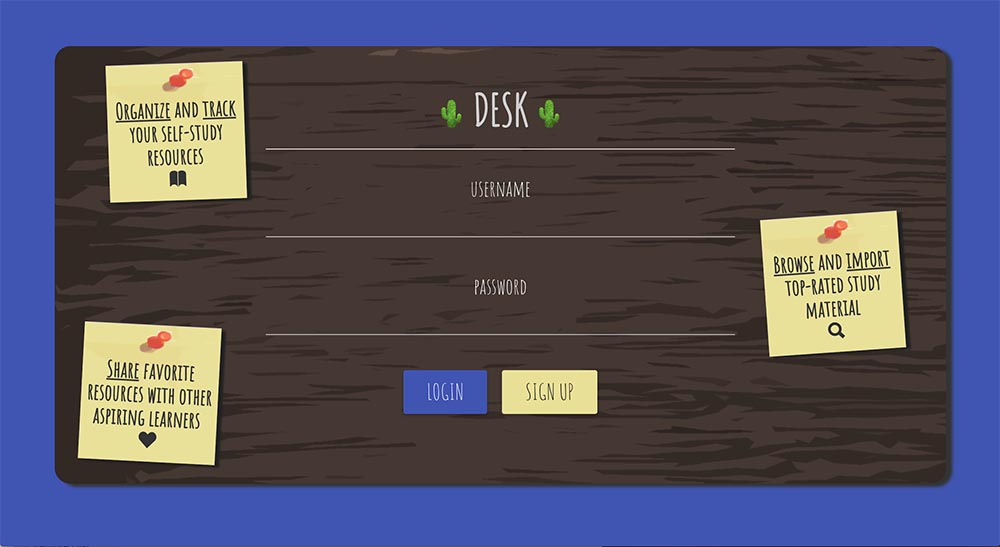
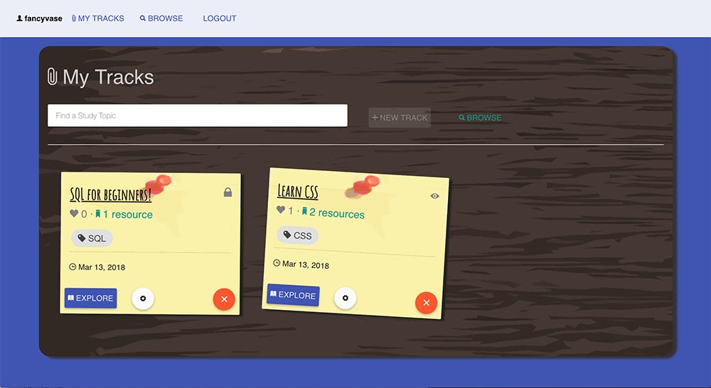
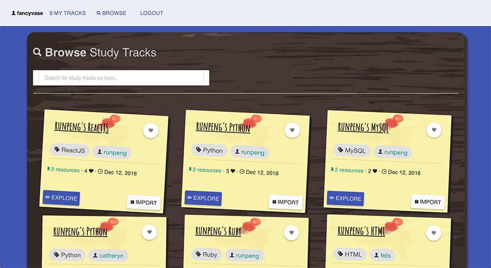
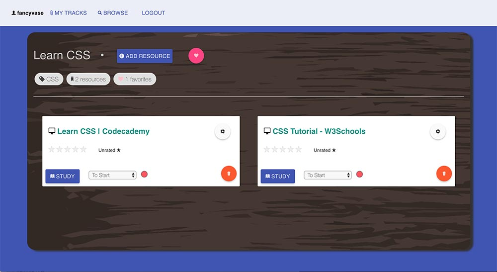
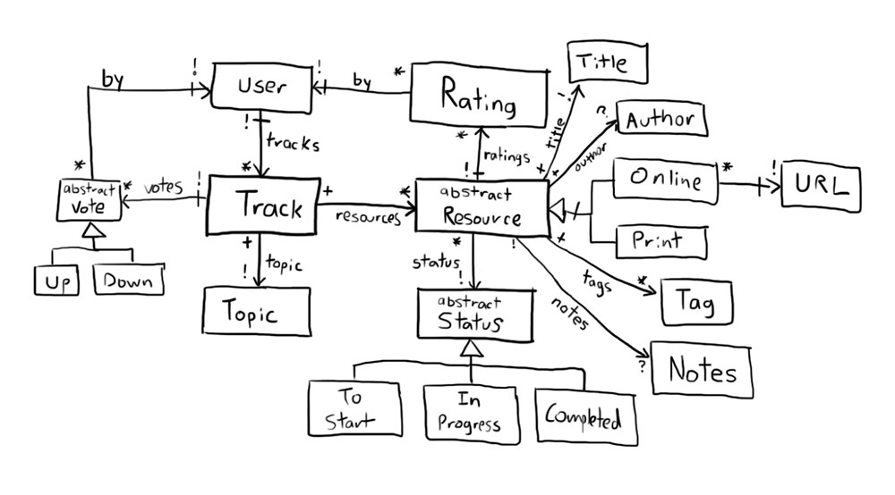

Desk is a web application that helps aspiring self-learners be more efficient, motivated, and organized while self-studying or learning a new topic.
I built Desk with Stef Ren, Catheryn Li, and Runpeng Liu as our final project for MIT's Software Studio (6.170) class.
Login
Dashboard
Browse
Study Track
Current solutions for self-study rely heavily on site-specific material; for example, Coursera and edX help track progress through a course that is not user-specific and cannot be modified or augmented with other study materials.
Our app’s approach will allow users to keep track of their personalized self-study track. Desk allows users to easily find materials that are complementary to the resources they are already using.
In order design a web application that effectively helps users self-learn, we identified key concepts we would use, as well as purposes and operational principles for each. Here are the concepts used in Desk:
To describe the relationship and constraints between different elements of our application, we diagrammed a data model:
Check out Desk for yourself here!